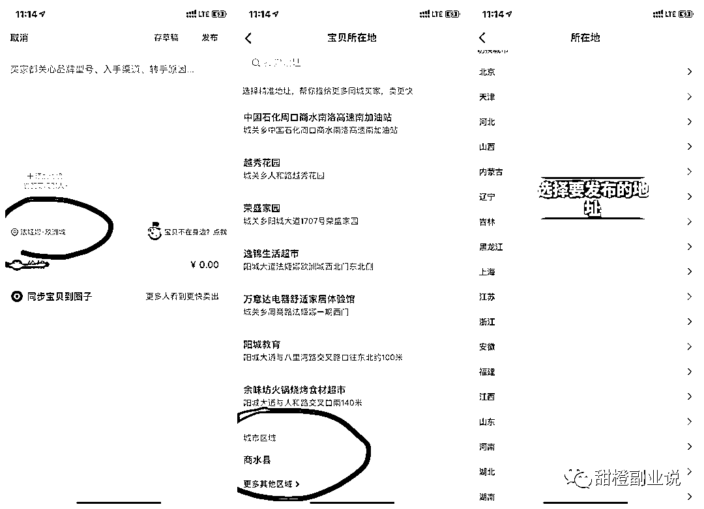

来源：https://wi0p58be3a2.feishu.cn/docx/O0qwdKIFNoMbttxWplZc9MZ5nSh
嗨，大家好吖，我是甜橙，22年6月毕业，目前深耕闲鱼无货源高利润选品卖货和自媒体。欢迎来到甜橙的闲鱼卖货频道。
前面甜橙给大家分享了 ，有些圈友看了文档立马去操作上架产品了，但问甜橙说“甜橙，为啥我的曝光不高吖，怎么提升我的曝光率呢？”
曝光，我们在操作闲鱼平台电商是不得不面对的问题。
有个宝子甚至来咨询甜橙说：我的闲鱼最近一个多月曝光都一直在10多万，但最近每天剩下1万左右，也没有违规，客户也说账号没问题，原来几个曝光高的链接也没用曝光了，新发的宝贝基本也没什么曝光，请问这是为什么呢？
那么，闲鱼店铺曝光和的底层逻辑是什么？哪些因素会影响曝光数据？如何提升曝光数呢？
今天，甜橙就来给大家分享一下闲鱼店铺曝光的问题~
无论在哪里做生意，流量是第一重要核心要素，没有流量，再好的产品，再好的服务也是白搭。而闲鱼的流量情况就可以从曝光数据来看。
闲鱼是淘宝旗下的，流量来源分为两部分：1、关键词搜索；2、系统推荐。
你的产品被买家看到多少次，划过去没点击也算一次曝光
不同的闲鱼账号不要在同一个无线网下面登录，也不要不同的闲鱼店铺来回在同一个设备上面切换登录，否则你的曝光会非常低，这个已经被验证过无数次。
这都是一些小伙伴的惨痛经历，不过串号过后是可以解决的，如果有伙伴发生这个情况可以找甜橙咨询解决。
总体来说，影响曝光的原因有很多，不同品类的宝贝曝光量是不同的，就比如说，数码类是天然的高曝光产品，但如果你做的是小众产品，就不要想那么高的曝光了。
（但数码类有些品闲鱼在打击，劝大家布局好选品先）
详情请见这篇文章：刚进群的闲鱼学员反映：上架群公告产品被封号了？为啥最近很多人的闲鱼号都被封了？？（https://mp.weixin.qq.com/s/7v3PkERQq2cpCvzZ47ESWw）
但是无论如何，做店铺的而核心是赚钱，一切以利润为优先。而提高利润最重要的就是选品，选对产品，等于成功了一半。但是选品这个东西需要思路也需要经验，经验急不来，但是思路还是可以先掌握的！
关于选品，可以看我的这两篇文章做更多的了解。
闲鱼平台选品技巧揭秘！太实用啦！（一）
闲鱼平台四大选品技巧揭秘！（二）
1、完善账号基本信息我们要完善账号的基本信息，也就是提高账号权重，芝麻信用分越高越好，最少要大于700分；芝麻信用分影响初始排名，分数越高，初期发布的商品展示就越靠前。
2、宝贝擦亮闲鱼每天会赠送一次擦亮的机会，相当于你的产品，可以多一次曝光的机会，这是最基本的曝光方法；
3、坚持上新
最有效提升曝光的方式，就是坚持每天上新品。卖家发布的宝贝越多，曝光度也会越高。
闲鱼一共能上50件商品，每天坚持上新几个宝贝，然后把长期曝光不好的产品下架删除即可。
4、做好售前售后
售前：及时回复客户的问题，比如客户咨询的时候就立马回复，这样可以大大提高转化率。
同时要利用好闲鱼的自动回复功能设置，这样可以zui大可能性的留住客户，看下图，闲鱼右下角---我的--右上角设置--消息通知——智能回复--不在线回复--编辑就行，看下图
客户如果给你砍价，切记不要太干脆答应或者不要一下降价太多，可以适当降一点并且换一些东西，比如收藏宝贝关注店铺或者后期好评等去交换。
5、提高成交率
闲鱼的规则是，产品销售好，会给更多的曝光量；如果闲鱼给你一个产品特别曝光，但是一直没有转化，他也会慢慢的减少曝光，所以销量也是其中的一个因素。销量越多，权重层级就越好。
好评越多权重也会越高，这里的话好评尽量得去和买家要，到货后积极的询问，宝贝如何能够给个好评，如果买家不愿意觉得宝贝不满意要给差评，那么可以用返佣金的方式和他协商要好评.
6、账号退款率
尽量不要造成退款和纠纷，偶尔的退款和纠纷是没事的。如果退款太多，甚至是交易纠纷太多，那么就会影响系统给你闲鱼账号的定位，太多的退款和纠纷会让系统判定，降低你账号权重减少流量扶持。
前面甜橙分享的文章：闲鱼卖货全流程步骤，手把手教你卖货！里面的产品标题、标签、地址就是影响单个商品曝光的的因素。
有些小白可能标题是啥都不知道，那我截图红色圆圈中那些就属于标题，标题空行下面属于文案，标准的标题是60个字符也就是30个汉字，但是实际上闲鱼相对来说不是那么严格，可以长一些也是没有问题的
标题如何如何去写？
如果不会组合标题的话，小白最简单的办法就是参考同行标题去做，闲鱼同行或者多多淘宝同行标题，我们参考多多标题几个原则
a 不要选择销量zui高的标题，也不要选择销量低于100的标题
b 选择的标题必须和你的产品是符合的，也就是属性符合
c 标题中一般不建议带大品牌，当然有时候带上品牌有好处，但是也会有风险
什么是图片标签，有些小白可能还不懂，看下图，红色圈住的里面字比如：钓鱼船加厚充气船，这就是标签，标签词实际是对应产品的核心搜索词或者叫做产品长尾词，是对标题的补充，会影响产品的曝光，所以也要重视，标签也可以添加一些款式尺寸价格的描述
1、一二线城市
2、根据产品的调性来
3、发布地址几个原则：
a 不要发布到小城市，尽量发布到一二线城市，这样曝光会高
b 发布地址尽量不重复，发一个或者2个产品就换个地址
c 发布地址可以参考百度搜索对应产品关键词找到一些需求好的地方发
d 尽量避开同行多的地址发布可以提高出单率。
小白不知道闲鱼如何选择发布地址的可以看我下图：

本文标签：闲鱼卖货、闲鱼副业、闲鱼无货源、闲鱼曝光、闲鱼店铺曝光。
甜橙似锦，未来可期～